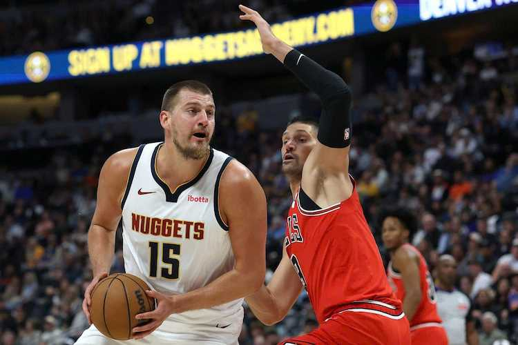

Ghi Triple-Double với 27 điểm, Nikola Jokic sánh ngang LeBron James trong sách kỷ lục NBA Playoffs
Với màn trình diễn đẳng cấp tại Game 5, siêu sao Nikola Jokic đã chính thức sánh vai cùng LeBron James trong một câu lạc bộ kỷ lục vô cùng hiếm hoi tại NBA Playoffs.

Nikola Jokic tỏa sáng tại Game 5
Denver Nuggets tiếp tục thể hiện phong độ ấn tượng tại playoff, với tâm điểm vẫn là Nikola Jokic. Trong chiến thắng 125-113 ở Game 5 trước Minnesota Timberwolves, Jokic ghi 27 điểm, 12 rebounds và 16 kiến tạo, cho thấy khả năng kiểm soát toàn diện trận đấu.
Sánh ngang LeBron James trong kỷ lục lịch sử
Màn trình diễn này giúp Jokic đạt cột mốc 20 triple-double từ 20 điểm trở lên tại playoff, trở thành cầu thủ thứ hai trong lịch sử NBA làm được điều này, sau LeBron James (26 lần). Đây là một thành tích đáng tôn vinh, cho thấy tính nhất quán của cầu thủ người Serbia.
Cân bằng kỷ lục 221 triple-double toàn sự nghiệp
Không dừng lại ở đó, Jokic cũng cân bằng kỷ lục 221 triple-double (tính cả mùa thường và playoff) với Russell Westbrook, khẳng định sự ổn định đáng kinh ngạc của mình. Để đạt được con số này đòi hỏi sự duy trì hiệu suất cao trong một thời gian dài.
Phong độ MVP mùa giải này
Ở mùa giải năm nay, Jokic tiếp tục duy trì phong độ MVP với trung bình 27,7 điểm, 12,9 rebounds và 10,7 kiến tạo mỗi trận, cùng hiệu suất ghi điểm ấn tượng từ cả trong lẫn ngoài vòng 3 điểm. Các con số này chứng minh rằng Jokic vẫn là một trong những cầu thủ toàn năng nhất giải đấu.
Denver Nuggets tiến gần đến chung kết
Với màn trình diễn liên tục từ Jokic cùng sự hỗ trợ của các đồng đội, Denver Nuggets đang dần tiến gần đến các vòng sau của playoff. Chiến thắng 125-113 ở Game 5 là một bằng chứng cho sức mạnh của đội bóng này, với Jokic là trung tâm của tất cả những gì họ làm.